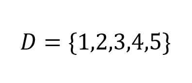
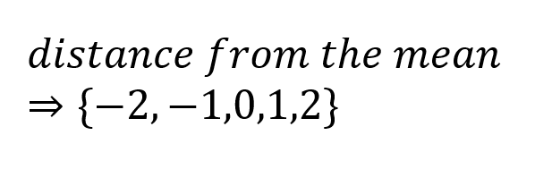
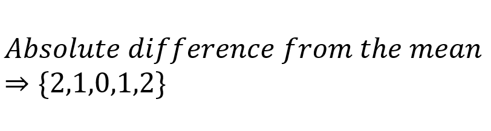

Here I have a set of data:
Suppose we want to describe how dispersed data is. One way to do that is by checking how far each value is from the mean (3), and get the average of that:
If we want to take the average of these values, we get 0; in fact, we will always get 0 no matter what data set we use. This isn't surpirsing since the mean is the center of the data set, so half of the data which is the smaller than the mean will just cancel the other half which is bigger than the mean, resulting in 0. How we take the absolute difference instead:
Since E[cX] = c*E[X], then we get:

We can simplify this equation: